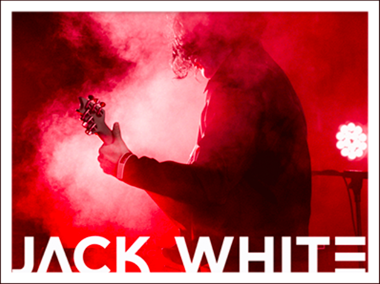

The
White Stripes
The
White Stripes
John Anthony "Jack" White (last name originally Gillis; born July 9, 1975) is an American musician, singer, songwriter, record producer and actor. He is known as the lead singer and guitarist of duo The White Stripes. He has also had success in other bands and as a solo artist. On April 24, 2012, White released his debut solo album, Blunderbuss. His second studio album, Lazaretto, was released on June 10, 2014. Both received wide commercial and critical acclaim. His third studio album, Boarding House Reach, was released on March 23, 2018.
Megan Martha White (born December 10, 1974) is an American drummer and occasional singer known for her work with Jack White in the Detroit rock duo The White Stripes. On an impulse, she played on Jack's drums in 1997. The two decided to form a band and began performing two months later, calling themselves The White Stripes because of their last name and Meg's fondness for peppermint candy. The band quickly became a Detroit underground favorite before reaching national, then international fame. White has been nominated for various awards as a part of the White Stripes, and has received four Grammy Awards.
The White Stripes were an American rock duo formed in 1997 in Detroit, Michigan. The group consisted of Jack White (songwriter, vocals, guitar, piano, and mandolin) and Meg White (drums and vocals). After releasing several singles and three albums within the Detroit music scene, The White Stripes rose to prominence in 2002, as part of the garage rock revival scene. Their successful and critically acclaimed albums White Blood Cells and Elephant drew attention from a large variety of media outlets in the United States and the United Kingdom, with the single "Seven Nation Army" which used a down-tuned guitar to create the iconic opening riff[1] becoming their signature song. The band recorded two more albums, Get Behind Me Satan in 2005 and Icky Thump in 2007, and dissolved in 2011 after a lengthy hiatus from performing and recording. The White Stripes used a low-fidelity approach to writing and recording. Their music featured a melding of garage rock and blues influences and a raw simplicity of composition, arrangement, and performance. The duo were also noted for their fashion and design aesthetic which featured a simple color scheme of red, white, and black—which was used on every album and single cover the band released—as well as the band's fascination with the number three. The band's discography consists of six studio albums, one live album, two extended plays (EP), one concert film, one tour documentary, 26 singles, and 14 music videos. Their last three albums each won the Grammy Award for Best Alternative Music Album.
The White Stripes have been nominated for a number of Grammy Awards, and have won a significant amount: